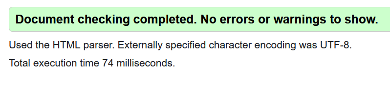

Adherence to design specifications
- The topic is "Why We Love Vintage?" found on the canvas list. This title was somewhat ambiguous, so I chose to write about the validity of using retro technolody in the modern day.
- Pages included are Main.html, Contact.html, and references.html. Additionally, I have included the necesary pages, being Metapage.html, and two choice pages, being YourChoice1.html and YourChoice2.html.
- Images are included as part of the sidebar on every page , as well as several illustrative images used throughout the content.
- Hyperlinks are used for both navigation within the site, and for external links. The sidebar features hyperlinks to other pages , while external links are used in the main content, as well as on the references page in place of the URLs.
- A contact form has been added at Contact.html
- Lists are present on both this page (ordered list for the design specifications), and on the sidebar across all pages (unordered list for the links to other pages.)
- All pages use UTF-8 characters, as seen usually on line 6 of every page.
- hrs are used on the main content page, along side elements such as i for italics and strong for the quote.
- div, header, nav, and main elemetns are present on all content pages, with the appropriate sections contained within them
- CSS styling is done externally in ExternalStyle.css, there also the other one
- Css properties have been done, I just need to document where
- All colors are in a hexcode format, as seen throughout the style sheet.
- Classes are used but i have no idea what the ID selector is.
- Both wireframes can be seen across all pages, with the sidebar, header, footer, and body all resembling wireframes A and B where needed.
- Tables are used on the my collection page to document which albums I own and in what mediums.
-
Main page validation,
Meta Page Validation,
References Validation,
Contact Page Validation,
Collection Page validation.

- All pages are available from all other pages, meaning my site is more navigable than the shown structure.